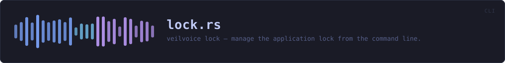

crates/veilvoice-cli/src/lock.rs
veilvoice-cli · 239 lines · read the source
veilvoice lock — manage the application lock from the command line.
The lock guards the desktop app: with one set, VeilVoice asks for a password before it will show anything or start a live scramble. Managing it from here exists because a headless machine still has a config directory, and because anything the GUI can do to a file on disk should be inspectable without the GUI.
Every path through this module prints [veilvoice_crypto::lock::SCOPE], for one reason: a lock the user believes is stronger than it is has made them less safe, not more.
WHAT CALLS WHAT
The functions this file defines, and the calls between them. An edge means the callee's name appears, called, inside the caller's body — a syntactic reading, not a type-resolved one.
The same graph as Mermaid source
%%{init: {"theme":"base","themeVariables":{"background":"#1a1b26","primaryColor":"#1f2335","primaryTextColor":"#c0caf5","primaryBorderColor":"#7aa2f7","secondaryColor":"#16161e","tertiaryColor":"#16161e","lineColor":"#737aa2","textColor":"#c0caf5","mainBkg":"#1f2335","nodeBorder":"#7aa2f7","clusterBkg":"#16161e","clusterBorder":"#2f3549","fontFamily":"ui-monospace, SFMono-Regular, Consolas, monospace","fontSize":"14px"}}}%%
flowchart TD
n_resolve["resolve<br/>line 33"]
n_print_scope["print_scope<br/>line 45"]
n_wrap["wrap<br/>line 54"]
n_run(["run<br/>line 72"])
n_status["status<br/>line 85"]
n_set["set<br/>line 119"]
n_change["change<br/>line 162"]
n_remove["remove<br/>line 174"]
n_open_or_explain["open_or_explain<br/>line 185"]
n_change --> n_open_or_explain
n_print_scope --> n_wrap
n_remove --> n_open_or_explain
n_run --> n_change
n_run --> n_remove
n_run --> n_resolve
n_run --> n_set
n_run --> n_status
n_set --> n_print_scope
n_status --> n_print_scope
classDef entry fill:#1f2335,stroke:#7aa2f7,color:#c0caf5
class n_run entry
classDef api fill:#1f2335,stroke:#7dcfff,color:#c0caf5
class n_wrap api
classDef helper fill:#1f2335,stroke:#bb9af7,color:#c0caf5
class n_resolve,n_print_scope,n_status,n_set,n_change,n_remove,n_open_or_explain helperThis site loads no third-party script, so it cannot run Mermaid; the diagram above is the same nodes and edges drawn by the generator instead. GitHub renders the source below directly.
ITEMS
| Item | Line | Documentation |
|---|---|---|
Action pub enum | 21 | |
resolve fn | 33 | Resolve the lock file, preferring an explicit --path. |
print_scope fn | 45 | Print the honest scope note, wrapped for a terminal. |
wrap pub fn | 54 | Greedy word wrap. |
run pub fn | 72 | |
status fn | 85 | |
set fn | 119 | |
change fn | 162 | |
remove fn | 174 | |
open_or_explain fn | 185 |